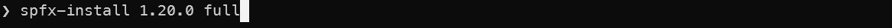
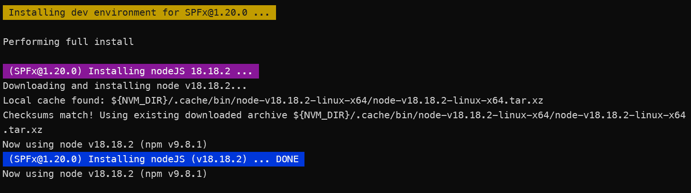
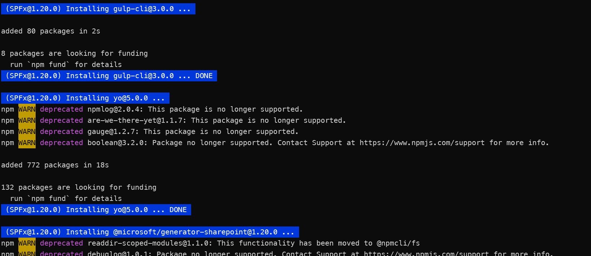
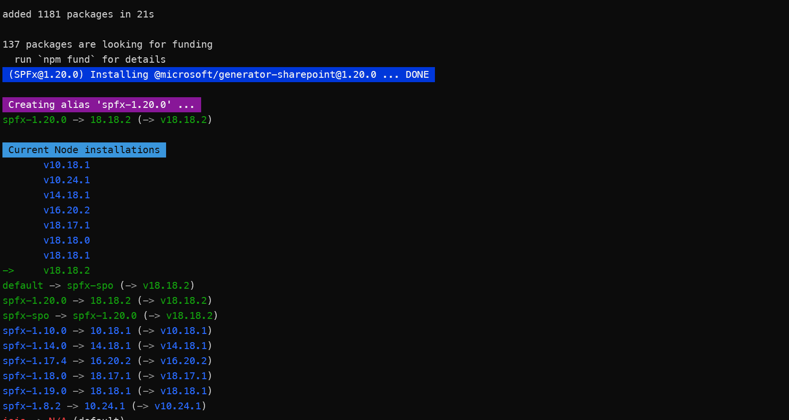
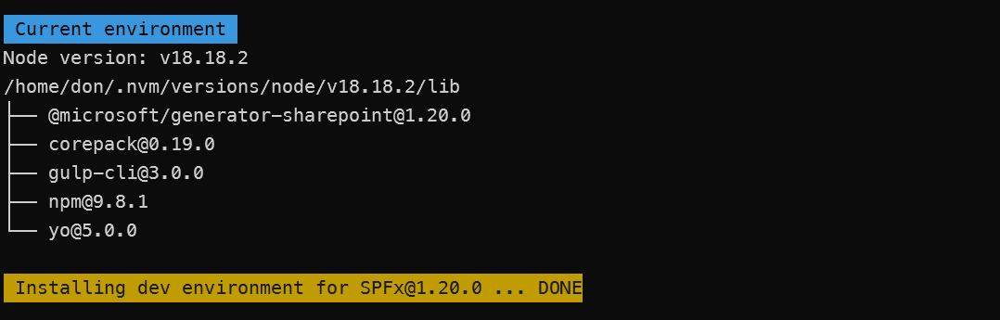

spfx-install.sh
Summary
This script installs specific versions of SharePoint Framework (SPFx) development environments, including NodeJS, npm, and gulp-cli. By including the 'full' option, Yeoman and the SPFx generator are also installed. If no version is specified, the SharePoint Online (spo/latest) version is installed.
If you want to install a specific version of SPFx, you can specify the version number as an argument. For example, to install SPFx v1.11.0, you would run the script as follows:
./spfx-install.sh 1.11.0
or
./spfx-install.sh 1.11.0 full
To get help one all options for the command line, run the script as follows:
./spfx-install.sh -help
The script will also create an alias for the version of SPFx you installed. For example, if you installed SPFx v1.11.0, the alias will be spfx-1.11.0. You can use this alias to switch to that version of SPFx as follows:
nvm use spfx-<version>
You can also use the following commands to switch to special versions of SPFx:
nvm use spfx-spo #latest released version supported by SharePoint Online
nvm use spfx-sp2019 #latest version supported by SP2019
nvm use spfx-sp2016 #latest version supported by SP2016
nvm use spfx-sse #latest version supported by SharePoint Server Subscription Edition
nvm use spfx-next #latest version in development
Screenshots
Command

Results
   
When new versions of SPFx are released, the script can be easily updated to include the new version. Instructions on how to do this are included in the script starting around line 138.
Prerequisites
The script is designed to be run from a bash shell, and it requires Node Version Manager (nvm) to be installed. If you don't have nvm installed, follow the installation instructions here: Installing nvm-sh
If you install the script in a location that is not in your PATH, you can create a bash alias to make it easier to run. For example, you could add the following line to your .bashrc or .bash_profile file:
alias spfx-install='/path/to/spfx-install.sh'
Then, you can run the script from any directory by simply typing spfx-install.
########################################################################################
# This script quickly installs an environment for specific versions of SPFx. #
# #
# For details on how to use this script, see the #HELP section at the bottom of this #
# file. #
# #
# Node Version Manager (nvm) is required to run this script. If you don't have nvm #
# installed, follow the installation instructions here: #
# https://github.com/nvm-sh/nvm?tab=readme-ov-file#installing-and-updating #
# #
# To uninstall nvm, run the following command: #
# rm -rf ~/.nvm #
# #
########################################################################################
#!/bin/bash
if [[ -n $1 ]]; then
version=$1
else
version="spo"
fi
if [[ "$1" == "-help" ||
"$1" == "-H" ||
"$1" == "--help" ||
"$1" == "help" ]] \
; then
gotoHelp="true"
else
gotoHelp="false"
fi
if [[ $gotoHelp == "false" ]]; then
if [[ -n $2 ]]; then
fullInstall="true"
else
fullInstall="false"
fi
unset latestAlias
############################################################
# This is the function to install specific versions of #
# NodeJs, npm, and gulp-cli. #
# #
# If $6(FULL INSTALL) is included, Yeoman and the SPFx #
# generator are also installed. #
# #
# PARAMETERS: #
# $1 = SPFX VERSION #
# $2 = NODE VERSION #
# $3 = NPM VERSION #
# $4 = YO VERSION #
# $5 = GULP VERSION #
# $6 = FULL INSTALL (true/false) #
############################################################
installSPFx() {
spfxVersion=$1
nodeVersion=$2
npmVersion=$3
yoVersion=$4
gulpVersion=$5
unset fullInstall
fullInstall=$6
. ~/.nvm/nvm.sh
echo
echo -e "\e[1;43m Installing dev environment for SPFx@$1 ... \e[0m"
echo
if [[ $fullInstall == "true" ]]; then
echo "Performing full install"
else
echo "Performing basic install (NodeJs & gulp-cli)"
fi
echo
nodeInstalled=$(nvm ls $nodeVersion)
if [[ $nodeInstalled == *"N/A"* ]]; then
echo -e "\e[1;45m (SPFx@$spfxVersion) Installing nodeJS $nodeVersion ... \e[0m"
nvm install $nodeVersion
echo -e "\e[1;44m (SPFx@$spfxVersion) Installing nodeJS (v$nodeVersion) ... DONE \e[0m"
else
echo -e "\e[1;45m (SPFx@$spfxVersion) NodeJs v'$nodeVersion' already installed \e[0m"
fi
nvm use $nodeVersion
previousloglevel=$(npm get loglevel)
npm config set loglevel warn
#always install gulp-cli
echo
echo -e "\e[1;44m (SPFx@$spfxVersion) Installing gulp-cli@$gulpVersion ... \e[0m"
npm install -g gulp-cli@$gulpVersion --quiet
echo -e "\e[1;44m (SPFx@$spfxVersion) Installing gulp-cli@$gulpVersion ... DONE \e[0m"
if [[ "$fullInstall" == "true" && "$npmVersion" != "0" ]]; then
echo
echo -e "\e[1;44m (SPFx@$spfxVersion) Installing npm@$npmVersion ... \e[0m"
npm install -g npm@$npmVersion --quiet
echo -e "\e[1;44m (SPFx@$spfxVersion) Installing npm@$npmVersion ... DONE \e[0m"
fi
if [[ "$fullInstall" == "true" ]]; then
echo
echo -e "\e[1;44m (SPFx@$spfxVersion) Installing yo@$yoVersion ... \e[0m"
npm install -g yo@$yoVersion --quiet
echo -e "\e[1;44m (SPFx@$spfxVersion) Installing yo@$yoVersion ... DONE \e[0m"
if [[ $nodeVersion[1] == 6 ]]; then
echo
echo -e "\e[1;45m (SPFx@$spfxVersion) Fixing yeoman-environment issue for Node v6 \e[0m"
echo
echo -e "\e[1;45m Deleting the yeoman-environment package installed by yeoman as a dependency ... \e[0m"
rm -rf ~/.nvm/versions/node/v$nodeVersion/lib/node_modules/yo/node_modules/yeoman-environment
echo -e "\e[1;45m Deleting the yeoman-environment package installed by yeoman as a dependency ... DONE \e[0m"
echo
echo -e "\e[1;45m Installing yeoman-environment@2.7.0 ... \e[0m"
npm install -g yeoman-environment@2.7.0 --quiet
echo -e "\e[1;45m Installing yeoman-environment@2.7.0 ... DONE \e[0m"
echo
echo -e "\e[1;45m (SPFx@$spfxVersion) Fixing yeoman-environment issue for Node v6... DONE \e[0m"
fi
fi
if [[ "$fullInstall" == "true" ]]; then
echo
echo -e "\e[1;44m (SPFx@$spfxVersion) Installing @microsoft/generator-sharepoint@$spfxVersion ... \e[0m"
npm install -g @microsoft/generator-sharepoint@$spfxVersion --quiet
echo -e "\e[1;44m (SPFx@$spfxVersion) Installing @microsoft/generator-sharepoint@$spfxVersion ... DONE \e[0m"
fi
echo
echo -e "\e[1;45m Creating alias 'spfx-$spfxVersion' ... \e[0m"
nvm alias spfx-$spfxVersion $nodeVersion
npm set loglevel $previousloglevel
}
############################################################
# HERE IS WHERE TO UPDATE WITH NEW VERSIONS #
# IMPORTANT!!! #
# MAKE SURE EACH VERSION GETS A UNIQUE NODEJS VERSION #
# #
# TO UPDATE: #
# 1. Change $spoVersion to latest LTS version #
# 2. Add section for new spfx version #
# 3. Update versions of yo and gulp-cli, as needed #
# #
# spfxInstall parameters #
# $1 = SPFX VERSION #
# $2 = NODE VERSION #
# $3 = NPM VERSION (0 means to use npm from nodejs) #
# $4 = YO VERSION #
# $5 = GULP-CLI VERSION #
# $6 = FULL INSTALL (true/false) #
############################################################
clear
echo
if [[ "$version" == "next" ]]; then
nextNodeVersion=22.14.0 # THIS IS THE NODE VERSION, NOT SPFX
nextAlias=$nextNodeVersion
echo -e "\e[1;43m Installing dev environment for SPFx@next using NodeJs v$nextNodeVersion ... \e[0m"
installSPFx next $nextNodeVersion 0 5 3 true
fi
if [[ "$version" == "spo" ]]; then
spoVersion="1.21.0" #used to create the alias
version=$spoVersion
echo -e "\e[1;43m Installing dev environment for SPFx@spo(v$version) ... \e[0m"
fi
if [[ "$version" == "1.21.0" || "$version" == "all" ]]; then #updated 10/1/2024
installSPFx 1.21.0 22.15.0 0 5.0.0 3.0.0 $fullInstall
fi
if [[ "$version" == "1.20.0" || "$version" == "all" ]]; then #updated 10/1/2024
installSPFx 1.20.0 18.18.2 0 5.0.0 3.0.0 $fullInstall
fi
if [[ "$version" == "1.19.0" || "$version" == "all" ]]; then
installSPFx 1.19.0 18.18.1 0 5.0.0 3.0.0 $fullInstall
fi
if [[ "$version" == "1.18.1" || "$version" == "all" ]]; then
installSPFx 1.18.1 18.18.0 0 4.3.1 2.3.0 $fullInstall
fi
if [[ "$version" == "1.18.0" || "$version" == "all" ]]; then
installSPFx 1.18.0 18.17.1 0 4.3.1 2.3.0 $fullInstall
fi
if [[ "$version" == "1.17.4" || "$version" == "all" ]]; then
installSPFx 1.17.4 16.20.2 0 4.3.1 2.3.0 $fullInstall
fi
if [[ "$version" == "1.17.3" || "$version" == "all" ]]; then
installSPFx 1.17.3 16.20.1 0 4.3.1 2.3.0 $fullInstall
fi
if [[ "$version" == "1.17.2" || "$version" == "all" ]]; then
installSPFx 1.17.2 16.20.0 0 4.3.1 2.3.0 $fullInstall
fi
if [[ "$version" == "1.17.0" || "$version" == "all" ]]; then
installSPFx 1.17.0 16.19.1 0 4.3.1 2.3.0 $fullInstall
fi
if [[ "$version" == "1.16.1" || "$version" == "all" ]]; then
installSPFx 1.16.1 16.19.0 0 4.3.1 2.3.0 $fullInstall
fi
if [[ "$version" == "1.16.0" || "$version" == "all" ]]; then
installSPFx 1.16.0 16.18.1 0 4.3.1 2.3.0 $fullInstall
fi
if [[ "$version" == "1.15.2" || "$version" == "all" ]]; then
installSPFx 1.15.2 16.15.0 0 4.3.1 2.3.0 $fullInstall
fi
if [[ "$version" == "1.15.0" || "$version" == "all" ]]; then
installSPFx 1.15.0 16.15.1 0 4.3.0 2.3.0 $fullInstall
fi
if [[ "$version" == "1.14.0" || "$version" == "all" ]]; then
installSPFx 1.14.0 14.18.1 0 4.3.0 2.3.0 $fullInstall
fi
if [[ "$version" == "1.13.1" || "$version" == "all" ]]; then
installSPFx 1.13.1 14.18.0 0 4.3.0 2.3.0 $fullInstall
fi
if [[ "$version" == "1.13.0" || "$version" == "all" ]]; then
installSPFx 1.13.0 14.17.1 0 4.3.0 2.3.0 $fullInstall
fi
if [[ "$version" == "1.12.1" || "$version" == "all" ]]; then
installSPFx 1.12.1 14.17.0 0 4.1.0 2.3.0 $fullInstall
fi
if [[ "$version" == "1.11.0" || "$version" == "all" ]]; then
installSPFx 1.11.0 10.22.0 0 3.1.1 2.3.0 $fullInstall
fi
if [[ "$version" == "1.10.0" || "$version" == "all" ]]; then
installSPFx 1.10.0 10.18.1 0 3.1.1 2.3.0 $fullInstall
fi
if [[ "$version" == "1.9.1" || "$version" == "all" ]]; then
installSPFx 1.9.1 10.23.3 0 2.0.5 2.3.0 $fullInstall
fi
if [[ "$version" == "1.8.2" || "$version" == "all" ]]; then
installSPFx 1.8.2 10.24.1 0 2.0.5 2.3.0 $fullInstall
fi
if [[ "$version" == "1.8.1" || "$version" == "all" ]]; then
installSPFx 1.8.1 8.16.2 0 2.0.5 2.3.0 $fullInstall
fi
if [[ "$version" == "1.8.0" || "$version" == "all" ]]; then
installSPFx 1.8.0 8.16.1 0 2.0.5 2.3.0 $fullInstall
fi
if [[ "$version" == "1.7.1" || "$version" == "all" ]]; then
installSPFx 1.7.1 8.16.0 0 2.0.5 2.3.0 $fullInstall
fi
if [[ "$version" == "1.7.0" || "$version" == "all" ]]; then
installSPFx 1.7.0 8.17.0 0 3.1.1 2.3.0 $fullInstall
fi
if [[ "$version" == "1.6.0" || "$version" == "all" ]]; then
installSPFx 1.6.0 8.12.0 0 2.0.5 2.3.0 $fullInstall
fi
if [[ "$version" == "1.5.1" || "$version" == "all" ]]; then
installSPFx 1.5.1 8.11.4 0 2.0.2 2.3.0 $fullInstall
fi
if [[ "$version" == "1.5.0" || "$version" == "all" || "$version" == "sse" ]]; then
installSPFx 1.5.0 8.11.3 0 2.0.2 2.3.0 $fullInstall
echo
echo -e "\e[1;45m Creating alias 'spfx-sse' ... \e[0m"
nvm alias spfx-sse spfx-1.5.1
fi
if [[ "$version" == "1.4.1" || "$version" == "all" || "$version" == "sp2019" ]]; then
installSPFx 1.4.1 8.9.4 0 2.0.1 2.3.0 $fullInstall
echo
echo -e "\e[1;45m Creating alias 'spfx-sp2019' ... \e[0m"
nvm alias spfx-sp2019 spfx-1.4.1
fi
if [[ "$version" == "1.4.0" || "$version" == "all" ]]; then
installSPFx 1.4.0 6.12.1 0 2.0.0 2.3.0 $fullInstall
fi
if [[ "$version" == "1.3.0" || "$version" == "all" ]]; then
installSPFx 1.3.0 6.11.3 0 2.0.0 2.3.0 $fullInstall
fi
if [[ "$version" == "1.1.0" || "$version" == "all" || "$version" == "sp2016" ]]; then
installSPFx 1.1.0 6.10.3 0 2.0.0 2.3.0 $fullInstall
#installSPFx 1.1.0 6 0 1.8.5 2.3.0 $fullInstall
echo
echo -e "\e[1;45m Creating alias 'spfx-sp2016' ... \e[0m"
nvm alias spfx-sp2016 spfx-1.1.0
fi
if [[ "$version" == "1.0.0" || "$version" == "all" ]]; then
installSPFx 1.0.0 6.15.1 0 2.0.0 2.3.0 $fullInstall
fi
#additional aliases
if [[ -n "$spoVersion" ]]; then
echo
echo -e "\e[1;45m Creating alias 'spfx-spo (latest)' ... \e[0m"
nvm alias spfx-spo spfx-$spoVersion
nvm alias default spfx-spo
fi
if [[ -n "$nextAlias" ]]; then
echo
echo -e "\e[1;45m Creating alias 'spfx-next' ... \e[0m"
nvm alias spfx-next $nextAlias
fi
echo
echo -e "\e[1;46m Current Node installations \e[0m"
nvm ls
echo
echo -e "\e[1;46m Current environment \e[0m"
echo "Node version: $(node -v)"
npm ls -g --depth=0
echo -e "\e[1;43m Installing dev environment for SPFx@$1 ... DONE\e[0m"
else
#HELP
echo "Installs specific versions of SPFx environments, including NodeJS, npm, and gulp-cli."
echo "By including the 'full' option, yeoman and the SPFx generator are also installed."
echo "If no version is specified, the SharePoint Online (spo/latest) version is installed."
echo
echo "Usage: install-spfx [options]"
echo " if bash alias is installed, the above can be run from any folder, "
echo " otherwise run from the folder where the script is located"
echo
echo "Options:"
echo " help, -help, -H, --help output usage information"
echo " <version> full installs yeoman, SPFx generator, and gulp-cli"
echo " <version> if 'full' ommitted, only gulp-cli is installed"
echo
echo "Examples:"
echo " spfx-install spo full installs full tools to build SPFx solutions with latest version"
echo " spfx-install 1.11.0 installs basic tools to use SPFx v1.11.0"
echo " spfx-install 1.15.0 full installs full tools to build SPFx v1.15.0 solutions"
echo " spfx-install next installs full tools to build SPFx solutions with next (beta) version"
echo " spfx-install all installs basic tools for all versions of SPFx"
echo " spfx-install sp2016 installs basic tools for SPFx v1.4.1 (latest version supported by SP2016)"
echo " spfx-install sp2019 installs basic tools for SPFx v1.8.2 (latest version supported by SP2019)"
echo " spfx-install sse installs basic tools for SPFx v1.5.0 (latest version supported by SharePoint Server Subscription Edition)"
echo
echo "Once a specific version of SPFx is installed, you can use the following command to switch to it:"
echo " nvm use spfx-<version>"
echo
echo "You can also use the following command to switch to special versions of SPFx:"
echo " nvm use spfx-spo #latest released version supported by SharePoint Online"
echo " nvm use spfx-sp2019 #latest version supported by SP2019"
echo " nvm use spfx-sp2016 #latest version supported by SP2016"
echo " nvm use spfx-sse #latest version supported by SharePoint Server Subscription Edition"
echo " nvm use spfx-next #latest version in development"
fi
Contributors
| Author(s) |
|---|
| Don Kirkham |
Disclaimer
THESE SAMPLES ARE PROVIDED AS IS WITHOUT WARRANTY OF ANY KIND, EITHER EXPRESS OR IMPLIED, INCLUDING ANY IMPLIED WARRANTIES OF FITNESS FOR A PARTICULAR PURPOSE, MERCHANTABILITY, OR NON-INFRINGEMENT.